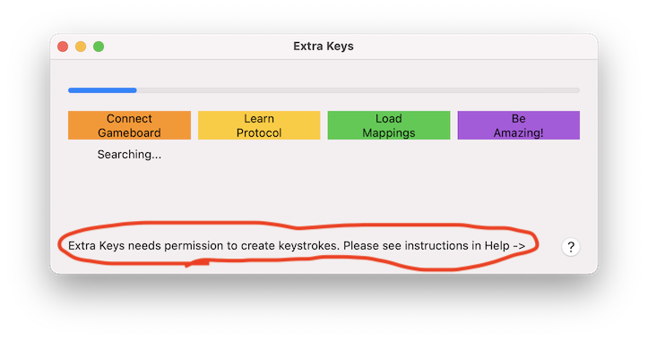
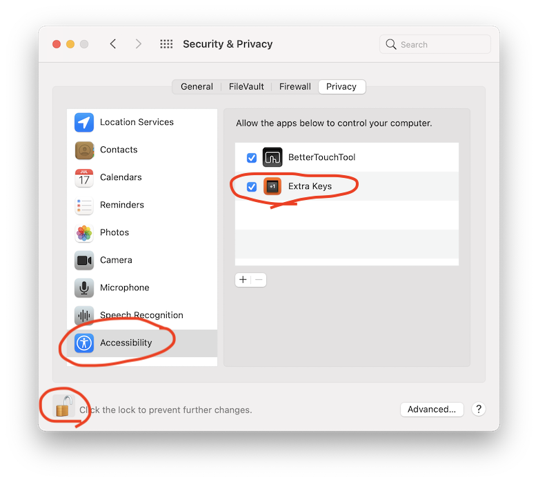

|
|
Extra KeysKeypad mapping toolSupport:
|
Extra Keys is an app which allows the use of the Logitech G13 Advanced Gameboard on macOS, particularly macOS 10.15 (Catalina) and later, where the manufacturer's software ended, but also on macOS 10.14 (Mojave) if preferred.
The G13 Advanced Gameboard is a USB keypad which has been popular with gamers as well as non-gamers to increase their capabilities and efficiency controlling games, development tools, and other apps. Since manufacturer support for this hardware was dropped with the release of macOS Catalina, Extra Keys fills the void allowing owners to keep using their gameboard.
Extra Keys needs permission in System Preferences in order to be able to generate keystrokes. If this is missing it will seem like Extra Keys detects your gameboard key presses and decodes them but cause anything to happen. Extra keys will also show a message to let you know that it needs permission.

Here are the steps to fix this:
I‘m not sure if you even need to quit and reopen Extra Keys after granting permission, but that and rebooting are good things to try if Extra Keys continues to report that it doesn‘t have premission.
Extra Keys includes a much more detailed help section within the app. Just click the question-mark circle in the lower right corner of the Extra Keys window to view it.